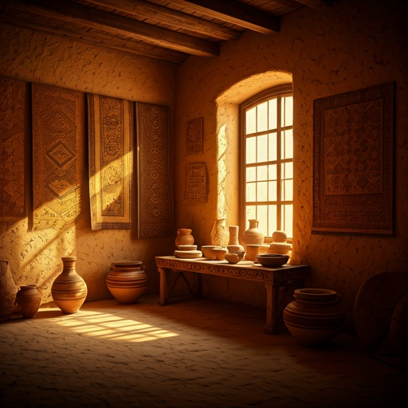
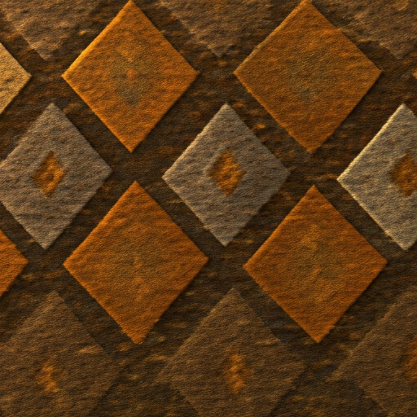
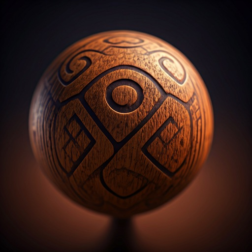
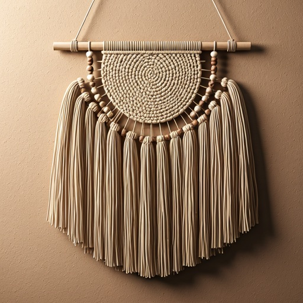
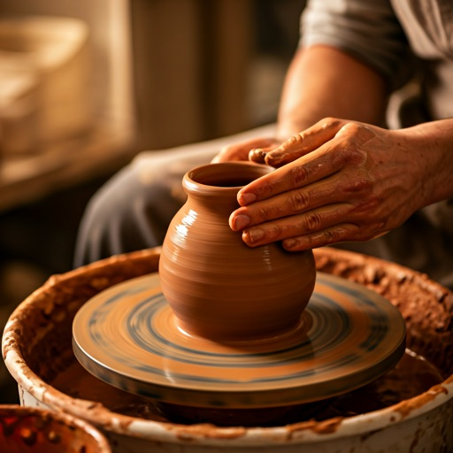
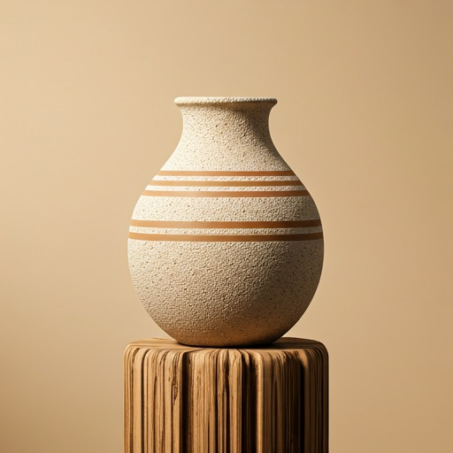
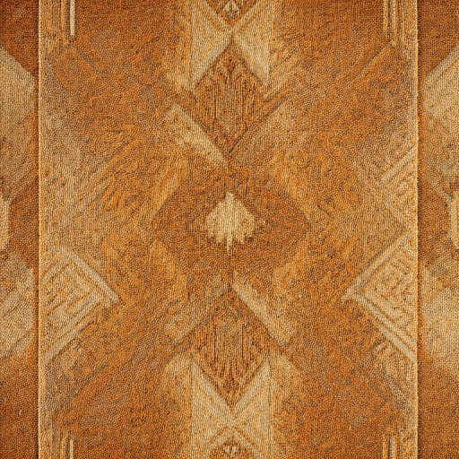
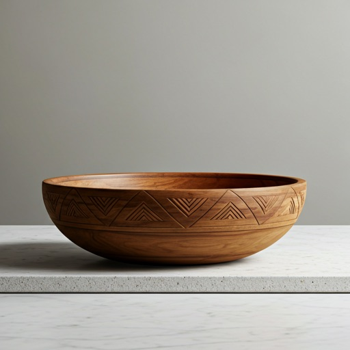
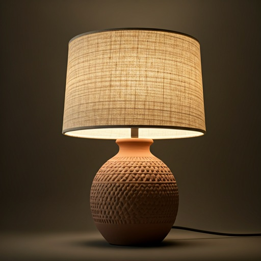

Woven from the Soul of Earth
Discover sacred geometry and artisanal artifacts that bring the timeless spirit of ancestral craftsmanship into your modern sanctuary.
Sacred Earth Collections

The Looms of Atlas
Traditional hand-woven textiles with symbolic narratives.
View Collection arrow_forwardTerracotta Soul
Unglazed ceramic vessels preserving the raw texture of the silt riverbanks.



The Alchemy of
Clay & Thread
Ethical Extraction
We source raw silt and organic dyes only from certified sustainable heritage sites.
Artisan Lineage
Every piece is signed by the family lineage that has perfected the craft over generations.
Atmospheric Kilning
Our clay is fired using traditional wood-fire methods, giving each vessel a unique smoke-kissed finish.
Artifact Registry
Limited edition handcrafted pieces ready for your home.

Sienna Stripe Vessel
Hand-molded Clay

Atlas Loom Hanging
Organic Sheep Wool

Teak Totem Bowl
Sustainable Hardwood

Nomad Hearth Lamp
Mixed Media Ceramic
Join the Oral Tradition
Receive periodic chronicles of heritage, artisan interviews, and early access to archival collections.
Respecting your privacy as we respect our heritage.